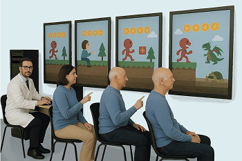
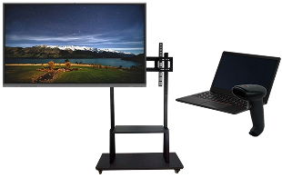

НЕЙРОТАЧ
система реабилитации по восстановлению мелкой моторики
Назначение: для реабилитации больных с нарушением мелкой моторики.
Показания к применению: нарушение мелкой моторики в следствии травм, нарушения периферического и центрального звеньев иннервации.
Область медицины: прибор может применяться в неврологии, реабилитации и научных исследованиях для коррекции нарушений мелкой моторики. Возможно применение при реабилитации после инсульта, болезни Паркинсона, рассеянном склерозе, последствиях травмы ЦНС и периферических нервов, опухоли спинного и головного мозга.
ОБЗОР
“Нейротач” — это система реабилитации для восстановления мелкой моторики, основанная на выполнении интерактивных упражнений. Устройство отслеживает движения руки пользователя с высокой точностью и в реальном времени отображает их на экране. Благодаря визуальной обратной связи и системе игровых заданий, пациенты могут тренироваться с высокой мотивацией и вовлечённостью.
Аппаратная часть системы реабилитации
В основе всего лежит защищённый сервер с шифрованием данных где храниться вся ключевая информация, а именно: карточки пациентов, база данных результатов и динамики.Мы используем современные технологии шифрования, чтобы гарантировать полную конфиденциальность медицинских данных. В дисплейном классе реабилитации устанавливается n-ое количество интерактивных панелей, на каждой из которых будет установлено наше приложение в виде АПК файла.
Визуальные задания представлены в форме игр и упражнений, которые тренируют разные типы движений: плавность, точность, координацию и силу.
Программная часть системы реабилитации
Нейротач включает в себя пакет из трёх игр:
Проведение непрерывной линии в заданных границах.
Назначение: восстановление контроля над своими движениями, улучшение точности и плавности движений.
Повторение штриховых линий по заданным траекториям.
Назначение: восстановление контроля над своими движениями, улучшение когнитивных функций (внимания, планирования действий), выносливости.
Повторение заданных фигур на расположенном рядом чистом поле.
Назначение: восстановление контроля над своими движениями, улучшение когнитивных функций, выносливости, стимулирование творческого мышления, улучшение зрительно-моторной координации.
КОМПЛЕКТАЦИЯ
Количество панелей с предустановленными пакетами игр может меняться
- интерактивная панель (n)
- стойка для крепления (n)
- пакет игр (n)
- ноутбук (n)
- сканер QR-кодов (1)
- инструкция по эксплуатации (1)
ДОКУМЕНТЫ
-
 788н «ОБ УТВЕРЖДЕНИИ ПОРЯДКА ОРГАНИЗАЦИИ МЕДИЦИНСКОЙ РЕАБИЛИТАЦИИ ВЗРОСЛЫХ»
788н «ОБ УТВЕРЖДЕНИИ ПОРЯДКА ОРГАНИЗАЦИИ МЕДИЦИНСКОЙ РЕАБИЛИТАЦИИ ВЗРОСЛЫХ»
-
878н «ОБ УТВЕРЖДЕНИИ ПОРЯДКА ОРГАНИЗАЦИИ МЕДИЦИНСКОЙ РЕАБИЛИТАЦИИ ДЕТЕЙ»
-
1379н «ОБ УТВЕРЖДЕНИИ ПЕРЕЧНЯ ОБОРУДОВАНИЯ ДЛЯ ОСНАЩЕНИЯ И ПЕРЕОСНАЩЕНИЯ МЕДИЦИНСКИХ ОРГАНИЗАЦИЙ ПРИ РЕАЛИЗАЦИИ РЕГИОНАЛЬНЫХ ПРОГРАММ МОДЕРНИЗАЦИИ ПЕРВИЧНОГО ЗВЕНА ЗДРАВООХРАНЕНИЯ»